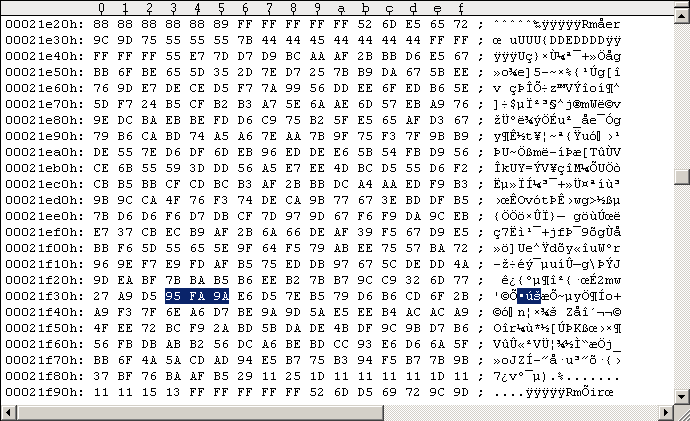

Main Index PatchesRapidLok2 patches: Disable the track 19 track header integrity checks
In order to test remastered RapidLok2 disks it might be helpful having the track 19 track header checks disabled. All other integrity checks remain active. Note: the track 19 integrity check routine also brings the disk in position for the track alignment on the following tracks 20-29. If the disk is not in the (more or less) correct position the track alignment checks may fail. Use this patch with care, on non-working remastered disks it may only work in combination with the track alignment patch. When RapidLok initially stepped the head from Track 18 to 19 it checks the integrity of the RapidLok track header: the 20-byte-sync (before $7B-extra-sector) is located by length check, the $7B extra sector length must be <256, the 40-byte-sync length after $7B-extra-sector and the 60-byte-sync length after $52 DOS reference header are checked. Note: It may be the best choice for remastering to place the track cut just before the 20-byte-sync of the track header, i.e. the G64 track images 19-29 should start with the 20-byte-sync before the $7B-extra-sector. So we disable the track 19 track header integrity checks here, see the following code snippets. --- ORIGINAL CODE ------------------------------ 04B9: 20 E6 06 JSR $06E6 ; Move head to Track 19 (from Track 18), set Bit rate and init [$55]/[$59]. 04BC: 20 75 04 JSR $0475 ; Check RL track header integrity, set/use [$C5]:=$32, CF:=1 if something goes wrong. 04BF: B0 F6 BCS $04B7 ; branch if error. Avoid this branch!!! ------------------------------------------------ We just replace the $04BF-BCS with a $24-BIT that also repairs the sector checksum in its argument. --- PATCHED CODE ------------------------------- 04B9: 20 E6 06 JSR $06E6 ; Move head to Track 19 (from Track 18), set Bit rate and init [$55]/[$59]. 04BC: 20 75 04 JSR $0475 ; Check RL track header integrity, set/use [$C5]:=$32, CF:=1 if something wrong. 04BF: 24 62 BIT $62 ; dummy, corrects sector checksum ------------------------------------------------ The calculation is as follows. The 2 bytes we change ($04BF/$04C0) have the following "parity" (the decrypted bytes are used for this here): original: $B0 xor $F6 = $46 patched: $24 xor $.. = $24 Hence $46 xor $24 = $62 is to be used for correcting the sector parity. As all RapidLok routines are encrypted on disk we have to encrypt our patches before we apply them to the G64 images. This happens as before. --- ORIGINAL DECRYPTION --------------------- 04BF = |27 D8| xor |97 2E| = |B0 F6| --------------------------------------------- --- MANIPULATED DECRYPTION ------------------ 04BF = |B3 4C| xor |97 2E| = |24 62| --------------------------------------------- Note on RapidLok address restrictions: There is no problem with the above patch addresses. The $04BF address belongs to the $04xx buffer which is read into memory by the $0300-B routine: Job #1, Track 18 Sector 9. Applying the patch to the G64 image I always use the Maverick v5.04 GCR Editor (in WinVice) to "edit" the G64 images. Please refer to the RL6 handbook for instructions. Don't save your modifications to disk/G64 from within the GCR Editor! Use "UltraEdit" in hex-mode instead to apply the changes directly to the G64 images (GCR code). The following Figure #1 shows the original Track 18 Sector 9 of a RapidLok2 G64 image, Figure #2 shows the modifications.
Figure #1: Original Track 18 Sector 9 of a RapidLok2 disk (PAL).
Figure #2: Patched Track 18 Sector 9 ($04BF patch).Remastering example Use "nibwrite -S18 -E18 patched.g64" to remaster the patched Track 18 at about 300rpm. Watch nibwrite's console log, don't let it truncate track data.